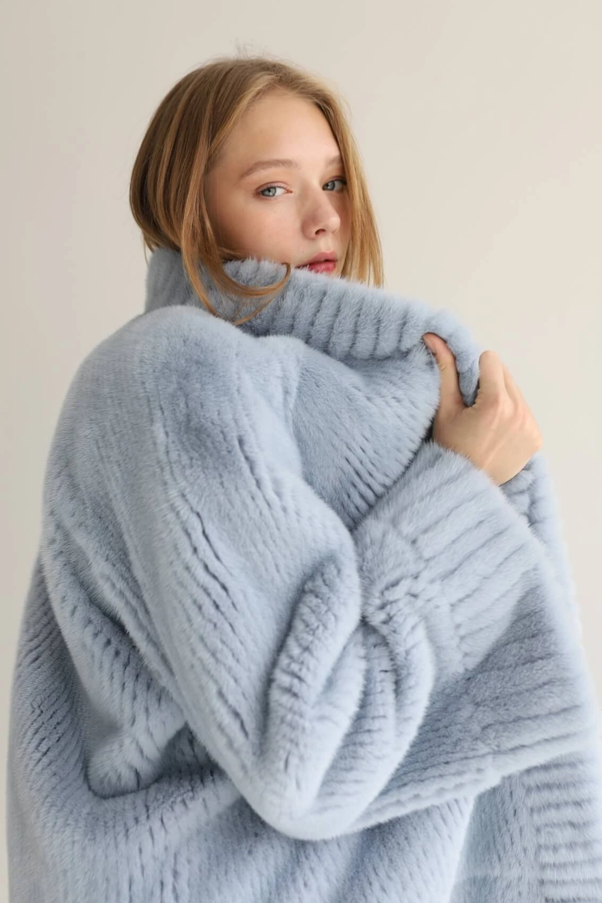
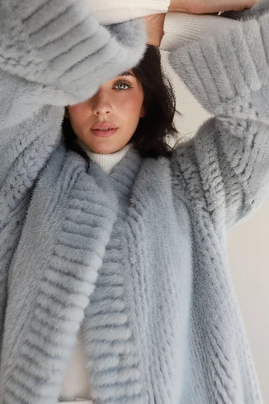
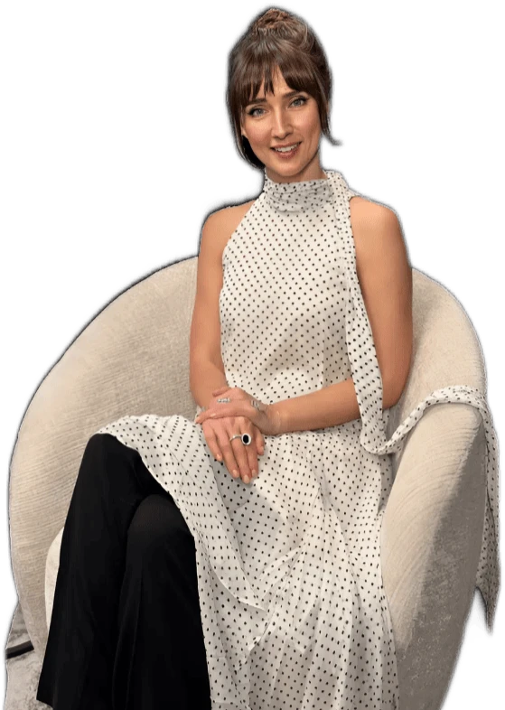

Москва, с 2015 года
Шуба по
вашим меркам
Индивидуальный пошив из натурального меха в ателье Алены Крапивиной.
Шуба на заказ от 600 000 ₽
Расклешённая норка
Ручная перфорация
Ручная перфорация
Модели ателье
Начните с изделия. На примерке мы подберём силуэт, оттенок и длину.
Ручная
перфорация
Мы вручную перфорируем норку. Меховое полотно становится лёгким и подвижным, а на сгибах проступает фактура трикотажа.
В прямом силуэте рисунок идёт вдоль фигуры. В расклешённом он раскрывается вместе с подолом.
Сравнить два силуэта


Подбор к примерке
Выберите изделие и детали, которые хотите обсудить с конструктором.
Эскиз силуэта AK Furs
Прямой силуэт
Ваш выбор
Стоимость и сроки
Шуба на заказ
от 600 000 ₽Стоимость меха рассчитываем отдельно по виду, меркам, длине и фасону. Воротник и капюшон влияют на расход.
Фурнитура и дополнительные материалы оплачиваются отдельно.
Работа ателье
| Лиса, песец, кролик, як | 120 000 ₽ |
|---|---|
| Норка, бобр | 180 000 ₽ |
| Каракульча | 210 000 ₽ |
| Норка с индивидуальным дизайном | 240 000–300 000 ₽ |
| Соболь, куница, горностай, шиншилла, рысь до колен | 360 000 ₽ |
| Соболь, шиншилла, рысь в пол | 420 000–540 000 ₽ |
4–6 недельНорка и свакара
6–10 недельСоболь и шиншилла
8–10 недельРысь
Срок зависит от сложности изделия и загрузки цеха.

Алена
Крапивина
Дизайнер и основательница AK Furs
В 2010 году я искала мастера, который смог бы повторить понравившийся силуэт и сохранить качество меха. С этого начался мой интерес к конструированию шуб.
В 2015 году я открыла своё ателье. Сегодня мы вместе с конструктором, скорняками и портными разрабатываем дизайн и добиваемся посадки каждой вещи.
Цех и командаОт макета до шубы
Первая встреча
На встречу отводим около часа. Конструктор снимает мерки. Вы прикладываете образцы меха, примеряете базовые фасоны и выбираете направление.
Примерка макета
За примерку, обычно около часа, проверяем длину, свободу движения и посадку. После всех изменений согласуем окончательную стоимость.
Работа с мехом
На этапе пошива ателье указывает ориентир 14 дней. Скорняк получает лекала и собирает меховое полотно. Портная соединяет детали и готовит изделие к примерке.
Примерка в мехе
Примерка до установки подкладки занимает около часа. Мы отмечаем, что ещё стоит изменить.
Доработка
На доработку обычно отводим два дня. Вносим финальные правки и закрываем подкладку. Существенные изменения могут потребовать ещё одной примерки.
Выдача и уход
Передаём готовое изделие. В течение года вносим необходимые корректировки, а на предсезонное меховое отпаривание можно обращаться и позже.
Условия ателье
Встречи в Москве и примерки по видеосвязи.
Как выбрать оттенок меха?
В ателье есть образцы разных видов меха и оттенков. Приложите их к лицу при встрече, а технолог расскажет о свойствах каждого. Мех мы закупаем на международных аукционах.
Сколько времени занимает пошив?
Норка и свакара — 4–6 недель, соболь и шиншилла — 6–10, рысь — 8–10. Срок зависит от сложности работы с мехом и загрузки цеха.
Как оплачивается заказ?
Оплата проходит через расчётный счёт ателье. Сначала вносится 40 000 ₽ за лекала и первый макет. Затем оплачиваются мех целиком и аванс 50% за пошив. По окончании работ вносится остаток 50% за пошив.
Когда фиксируется цена?
Первый расчёт и снятие мерок на встрече бесплатны. После примерки макета учитываем изменения объёма и фасона, согласуем итоговую сумму и фиксируем её до начала работы с мехом.
Можно ли заказать из другого города?
Мы работаем дистанционно с 2017 года. Отправим макет и образцы меха, проведём примерку по видеосвязи. Доставку организуем через СДЭК или другим согласованным способом, с полной страховкой груза.
Что входит в гарантию?
В течение года ателье вносит необходимые корректировки в изделие. За специальным меховым отпариванием перед сезоном можно обращаться без ограничения срока.
Примерка
в ателье
Москва, Большой Саввинский переулок,
д. 9, стр. 3, этаж 7, офис 13.
Принимаем обращения ежедневно
с 9:00 до 21:00.
* Instagram и Facebook принадлежат Meta, признанной экстремистской организацией в России.
Запрос подготовлен
Вот детали для разговора с ателье. Для реальной примерки свяжитесь с мастером и согласуйте время.
Данные не отправлены, запись не создана.